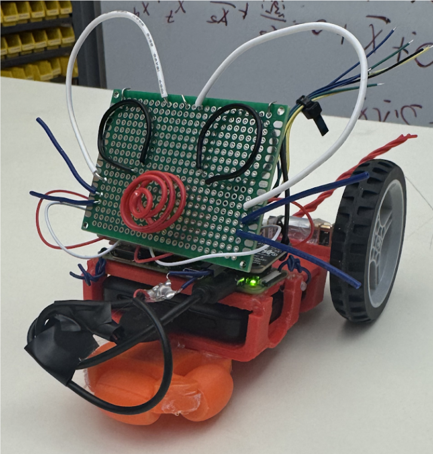

Relevant Coursework
I've' taken a wide variety of interesting and useful classes during my time at Colorado State University. While classes have been largely engaging and applicable to real-world environments, there have been some stand-out projects that are worth highlighting.


ECE 202: Micromouse Project
Overview
A large part of the sophomore-level Circuit Theory Applications class is a semester-long open-ended design project where teams of two or three students work on something related to electronics concepts learned in class. Additionally, we met regularly with an engineering mentor to help guide us in the build process My team decided to work on a micromouse, which is a small robot that is intended to solve a maze as quickly as possible. We didn't have quite enough time to make it solve a maze, but were able to create a small 'buggy' robot that could move on predefined paths or be controlled with a gamepad.Why I Did This Project
CSU's College of Engineering puts an emphasis on project-based learning, and this project is an effective introduction to that. As a team, we had to exercise skills such as time management, effective coordination and splitting of tasks, and communication; all crucial skills for working with others towards a common goal. In some ways, the project works as a warm-up for Senior Design, where engineering students join a much larger team, often on multi-year projects.What I Learned
- Time management and schedule coordination
- Group collaboration on an engineering project
- CAD and 3D printing
- Usage of brushless motors
More information is on the final report.

JTC 300: Humanoid Robots Recommendation Report
Overview
This is a full research-based recommendation report about the complex and rapidly-shifting issue of applications of humanoid robots, written for Strategic Writing & Communications, a class about writing in the workplace. The report dives into two categories of perspective on humanoid robots, and weighs the pros and cons of both optimists and skeptics of the technology. It then concludes with a more subjective weigh-in on the issues and a recommendation for both company leaders and investors in the humanoid robotics industry.Why I Did This Project
Professional writing is a skill that is sometimes neglected within the normal engineering curriculum, but JTC 300 provides a fantastic opportunity to develop skills for effective communication in the workplace. The recommendation report provides a great opportunity to demonstrate these skills in arguing for specific actions to be taken based on research. Humanoid robotics is a quickly-evolving industry with a lot of contradictory information and hype, so it was an interesting subject to try to understand and make an informed recommendation about.What I Learned
- Communication of ideas in a workplace environment
- Research into a topic with no clear-cut right answer
- Categorization and weighing in of different perspectives on a contraversial issue
- Effective usage of graphics and formatting to reinforce ideas
More information is on the full report.

CS 214: Song Statistics
Overview
Written entirely in Java over a full semester, the project takes in CSV files listing a series of songs, users, and ratings that the user provides for the songs. The program accepts various arguments relating to different statistics for the program to run on the dataset. While we were given specific criteria for functionality, implementation was completely left to us.Why I Did This Project
CS 214 was all about good programming technique with a focus on agile coding and test-driven development. This project created the perfect environment to put into practice all of the techniques we were learning. While we could code the project however we wanted, the codebase would quickly become impossible to maintain without all of the tools we learned in the class.What I Learned
- Programming using the Agile methodology
- Full-project test-driven development
- Implementation and interaction of data structures
More information is on the GitHub page.